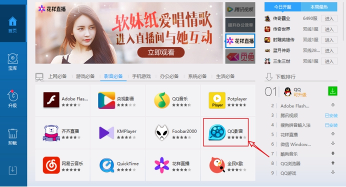
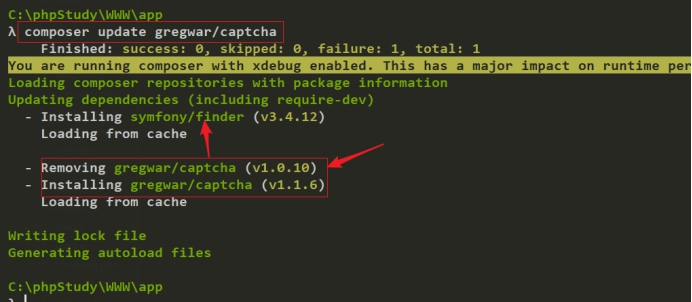
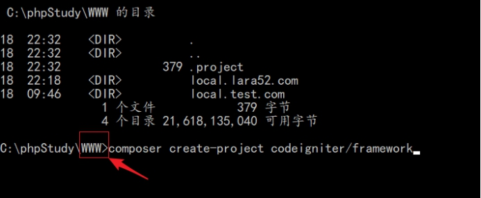
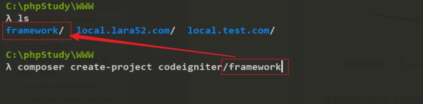
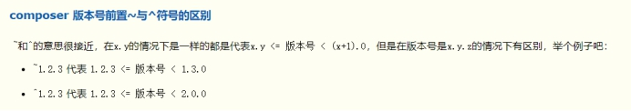

Composer
前言

当我们在做项目开发的时候，我们不可避免的需要进行一些通用性的功能，例如文件上传、缩略图的处理、二维码生成等等；当遇到这些需求后我们可以自己进行代码编写，函数封装、类库封装等操作，然后形成自己的代码库，以便下一次使用，但是自己写出来的代码毕竟经受的检验较少，所以我们一般会去网上搜寻相关的类库进行使用（便捷性），但是如果是在网上搜索的代码安全性和健壮性又很难得到保障，则这个时候有个我们迫切的需要一个类似nodejs里面的npm、python里面的pip、java里面的maven、linux下yum、apt-get等这样的包管理器，可以帮我们去管理这些类库，让开发者专门于业务的开发。哪里有需求，则哪里就有活雷锋，这个时候PHP的类库管理工具composer横空出生了！
例如：我们现在学习laravel框架
1 | > composer create-project laravel/laravel=5.2.* local.laravel52.com |
例如：我们现在学习日志类
1 | > composer require monolog/monolog |
当我们使用composer管理的这些类库的时候，这些类库都遵循PHP-FIG这个组织制定的一些列的规范，所以在正式需要composer之前，我们的先了解一下这些规范(PSR : php 标准推荐)。
psr规范简介
php-fig组织：主要是为了多个开源产品之间的一个互通问题。所以有一些开发者资源的组织起来来规范了PHP代码书写的标准，形成的标准规范被称为PSR规范。注意，该规范里面定义了很多的标准，例如：
psr-1：代码基本规范，规范代码基本书写风格
psr-2：对psr-1该版本的补充，增强
psr-3：对日志类库进行规范 ，例如常见的 monolog类库（定义好日志类的 interface）
psr-4：类库的自动加载机制，命名空间需要和类库的目录结构一致
参考文档：
http://www.cnblogs.com/52php/p/5852572.html
Composer简介
今天学习的知识点是PHP里面的类库管理，在正式讲解该知识点的时候，我们回顾这样一些这样的场景，当我们在Windows上装一些软件的时候，在iPhone手机或者安卓上装APP的时候，我们会怎么做呢？
我们习惯于去软件管家商店进行下载APP store，例如常见的QQ软件管家，360软件管家，同样的问题也是会在PHP开发里面出现，例如我们的项目需要使用验证码、做文件上传、还有微信开发的类库，则我们该如何处理这些类库呢？
答： 百度查询…

在互联网上存在一个PHP的应用商店，提供了PHP开发过程中常见的类库（需要遵循psr规范）。但是该网站只是提供一个类库对应的描述信息，以及下载地址。最终的类库文件的源码还是存在GitHub代码托管平台上的。该商店只是提供了对应的链接，下载的时候还是去GitHub上面进行下载。
那么我们使用什么样的工具去下载PHP应用商店里面的类库信息呢?
答：使用composer软件即可。
Composer 是 PHP 的一个包==依赖管理工具== ， 不是一个包管理器。 能够帮助我们安装我们项目所需要的依赖包。
除了解决文件依赖的关系，它还有更多的优点：
- 下载网络上别人分享的优秀的类库（包）。
- 可对下载的类库进行管理，如：删除、更新等众多便利的操作。
其实composer也就类似与Linux中yum，前端中的npm、bower等操作。这些工具都是可以用来管理我们项目的依赖文件。
Composer 官网：https://getcomposer.org/
Composer 包地址：https://packagist.org/
国内网站：http://www.phpcomposer.com/
为什么要学习Composer呢？
- 不用重复造轮子（把被人的上传类库拿过来直接使用，不要自己编写）
- 不用过分的关心某个功能的底层，只需要会看文档即可
- 解决类库的依赖问题（例如某个项目需要使用其他的产品，则会自动的解决）
- …………..
如何使用Composer呢？
安装
安装方式一般有两种方式：
第一种方式：
去composer官网( https://getcomposer.org/download/ )下载
Composer-setup.exe进行在线安装，由于此软件安装需要联网且服务器在国外安装很难成功，所以这里推荐使用下面第二种方式进行安装。
[==推荐==]第二种方式
去官网https://getcomposer.org/download 下载
composer.phar文件。找到并进入 PHP 的安装目录,将下载的
composer.phar复制到 ==PHP 的安装目录==下面，也就是和 php.exe 在同一级目录。
在 PHP 安装目录（如，
D:\phpStudy\php\php-5.6.27-nts）下新建一个composer.bat文件，并将下列代码保存到此文件中。1
@php "%~dp0composer.phar" %*
至此composer的安装就完成。
测试
进入对应php版本目录(D:\phpStudy\php\php-5.6.27-nts)中输入composer指令，出现如下提示代表安装成功：

为了可以全局（任意位置）访问composer，可以把php.exe的所在目录（D:\phpStudy\php\php-5.6.27-nts）定义在环境变量path选项中。
设置好后输入php -v 即可看到php版本号。

cmd中任意位置输入composer指令：

通过上面的安装我们可以使用composer这个软件，没有任何问题，但是在使用过程，可能还需要去开启PHP的一些扩展。
- php_curl扩展
- php_openssl扩展
- php_fileinfo扩展
- php_mbstring扩展（多字节扩展库）
在成功开启后，使用 phpinfo函数进行测试。
为composer配置国内镜像
由于composer需要去网址为https://packagist.org 获取代码库地址，再通过地址去github上去下载代码到我们项目本地，由于这两个地址服务器都在国外，访问比较慢，也不稳定。

镜像原理
配置国内镜像：https://pkg.phpcomposer.com/
输入命令
其它源：
1 | composer config -g repo.packagist composer https://packagist.laravel-china.org |
全局配置：
1 | composer config -g repo.packagist composer https://packagist.phpcomposer.com |
如上，参看composer配置命令，可查看composer配置保存的路径，全局的默认在当前用户文件夹下。
局部配置：若只想在当前项目中有效，把上面的命令去掉 -g 即可。
1 | composer config repo.packagist composer https://packagist.phpcomposer.com |
==Composer常见命令使用==
在composer做类库的管理过程中，我们先需要去PHP的应用商品。去查看开发过程中需要的类库。然后使用composer进行下载。
composer create-project 命令
该命令是用来安装项目的，可以通过该命令去下载对应的项目文件，例如 laravel框架。
1 | > composer create-project 团队名称/包名称[=版本号] [指定下载目录] [-vvv打印交互信息] |
注意：在使用composer安装项目的过程中，我们可能需要做两件事
- 指定安装的目录名称
- 指定安装的版本，默认是安装最新的版本
注意： 如果不指定版本，则下载最新的版本，如果不指定安装目录，则会把框架下载到命令执行的文件夹下，以包名称创建一个目录。
注意：版本号需要根据packagist.org网站提供的版本进行指定

示例：
1 | > composer create-project laravel/laravel=5.4.15 mylaravel |
现在的意思是安装laravel5.4.15这个版本，并且把该包安装到 mylaravel文件夹下。

1 | > composer create-project laravel/laravel |
当我们不指定版本信息，也不指定安装目录的时候，这样会在命令执行目录下安装一个最新的laravel产品，并且文件夹的名称为laravel。
composer require 命令
该命令是用来安装项目开发中的依赖文件，例如上传类库、验证码类库。
1 | composer require 厂商/包名[=版本号] |
注：若不指定版本号默认安装最新版本
示例
如安装tp5验证码1.0.3 版本：
composer require topthink/think-captcha=1.0.3
如安装tp5验证码1.0的最高版本：
composer require topthink/think-captcha=1.0.*
composer.json文件
该文件是用来记录composer管理的类库信息，以及项目的信息、作者、联系方式….
composer.lock文件

主要是为了防止项目部署的时候，去下载最新的版本导致不兼容，在安装之后，需要把当前版本锁定起来。以后部署的时候，还是使用当时所锁定的版本，如果希望使用最新的版本，而不是锁定的版本，只需要删除该文件即可。
composer install 命令

以后去公司之后，如果从git或者是svn上面检出了laravel项目，则第一步应该是先去项目的根目录下执行 composer install 去根据 composer.lock 或者composer.json 文件下载项目开发中的依赖信息。
安装composer.json指定的依赖包
1 | composer install |
会自动安装在composer.json文件中所指定的各种依赖包，执行成功后会多处生成一个composer.lock的锁文件。后面需要更新依赖库只能通过composer update实现安装。
composer.json文件说明：
https://docs.phpcomposer.com/01-basic-usage.html#composer.json-Project-Setup
composer.json文件架构详解：https://docs.phpcomposer.com/04-schema.html
在配置文件指定具体的版本
- 指定版本

- 使用命令进行安装
1 | > composer install |

删除composer.lock文件，重新执行 composer install 命令

安装后

composer update-类库升级
如果我们在开发过程中，现在希望某个类库可以升级

- 修改一个composer.json里面的信息

composer update进行更新

其它命令
查看所有的composer可以使用的命令
1
composer list
查看某个命令的使用
1
composer require --help
删除指定的包
1
composer remove topthink/think-captcha
搜索指定的包
1
composer search topthink/think-captcha
更新依赖包
1
composer update
若修改
composer.json中require指定的依赖包，则存在composer.lock文件，则只能通过composer update进行更新。
取消镜像
1
composer config -g --unset repos.packagist
查看当前composer版本
1
composer -v
升级composer版本
1
composer selfupdate
演示：项目下载
例如这里演示一下ci这个小框架的使用。
- 在网站进行搜索ci框架

- 使用
composer create-project进行安装

- 查看

- 启动一下

1 | > php -S localhost:8080 -t . |
使用PHP开启一个调试服务器，使用的端口是8080
-t代表是设置网站根目录
.代表将当前目录设置为网站根目录
- 浏览器查看

演示：日志类库下载
参考阅读
这里演示monolog的使用。
- 查看下载并monolog
- 查看安装后的目录结构

- 使用

一般来说类库的使用方式，需要查看文档。
版本号问题
参阅文档：
注意：在我们使用composer管理类库的时候，存在一些版本的配置信息。
1 | ^ |
具体的含义

如果只有两位版本号 x.y，则这个时候 ^ ~ 是代表一样的含义，就是代表 >x.y 但是小于 (x+1).0;
^1.2
~1.2
都是代表版本大于1.2 但是要小于 2.0;
但是如果版本号是 x.y.z 则这个时候，^ ~ 代表含义是不一样的
~1.2.3 代表含义 代表的大于bug修复版本，但是小于次版本号
^1.2.3 代表含义 代表大于当前版本，但是小于主版本号

相关资料
如何创建一个自己的【Composer/Packagist】包
Laravel5学习笔记：Composer.json配置文件说明